Tài liệu này đi hết hai bản của Nón Lá: bản điện thoại — nơi có camera và chạy được khi tắt mạng — và bản web máy tính chín trang. Mọi ảnh trong đây chụp từ chính bản đang chạy, không phải bản vẽ thiết kế.
| Bản điện thoại (PWA) | Bản máy tính | |
|---|---|---|
| Mở ở đâu | / — gốc của trang | /web/ |
| Quét bằng camera | ✔ có | ✘ không — dùng lối gõ tay |
| Chạy khi tắt mạng | ✔ đầy đủ | ✘ cần mạng |
| Bản đồ | 2.5D + bản đồ chi tiết + bản đồ ẩm thực | bản đồ khổ rộng |
| Bố cục | một cột, thanh tab dưới đáy | nhiều cột, thanh nav trên đỉnh |
| Dùng khi | đang đi, đang đứng trước quầy | ngồi đọc kỹ, lên kế hoạch trước chuyến đi |
Hai bản dùng chung một kho dữ liệu. Đổi vùng ở bản này thì bản kia cũng nhớ, vì lựa chọn vùng nằm trong bộ nhớ của trình duyệt.
Mở nonla-app.vercel.app bằng trình duyệt điện thoại → menu trình duyệt →
Add to Home Screen. Sau lần mở đầu tiên là dùng được offline.
127.0.0.1 cũng được miễn trừ —
còn mở qua địa chỉ IP nội bộ (192.168.x.x) thì trình duyệt sẽ chặn camera,
và app rơi về lối gõ tay.
Ba bộ ký hiệu này lặp lại ở mọi màn hình. Nắm được ba bảng dưới đây là đọc được toàn bộ app.
| Ký hiệu | Nghĩa | Ranh giới |
|---|---|---|
| chấm xanh | giá bình thường | ≤ p75 của vùng |
| chấm hổ phách | cao hơn 75% chỗ khác | p75 < giá ≤ p95 |
| chấm đỏ · +N% | vượt hẳn khoảng giá | > p95, kèm % lệch so với trung vị |
| gạch ngang | chưa đủ dữ liệu | vùng chưa có dòng giá cho món đó |
Mức nặng nhất trong một lần quét còn được vẽ thành viền màu quanh cả màn hình — nhìn một cái là biết, không cần đọc.
Đi ngay sau khoảng giá, trong cùng một cái liếc mắt. Đây là chỗ app nói cho bạn biết nó đang đoán hay đang trình bày một phép đo.
| Nhãn | Nghĩa |
|---|---|
estimate | Khoảng giá ước lượng, chưa qua khảo sát thực địa. Bản đang chạy hầu hết là bậc này. |
1–4 recorded | Bạn đã tự ghi vài giá thật, chưa đủ để thay số ước lượng. |
surveyed | Từ 5 mẫu khảo sát thật trở lên — vùng này đã ngừng dùng số ước lượng cho món đó. |
| Ghim | Nghĩa |
|---|---|
| Giọt nước xanh rêu + dấu tick | Cơ sở Đúng Giá, đã xác minh qua nhiều lượt quét |
| Giọt nước đỏ + chấm than | Cơ sở đang vượt khoảng giá địa phương |
| Giọt nước nâu + dấu hỏi | Chưa đủ dữ liệu để nói gì |
| Giọt nước vàng đồng + sao | Mốc tham quan must-see |
| Chấm vàng nhỏ + sao | Mốc phụ — chỉ hiện khi phóng gần |
Hai bước, và cả hai đều bỏ qua được. Sau đó không bao giờ hiện lại, trừ khi bạn tự gọi ra ở tab You.
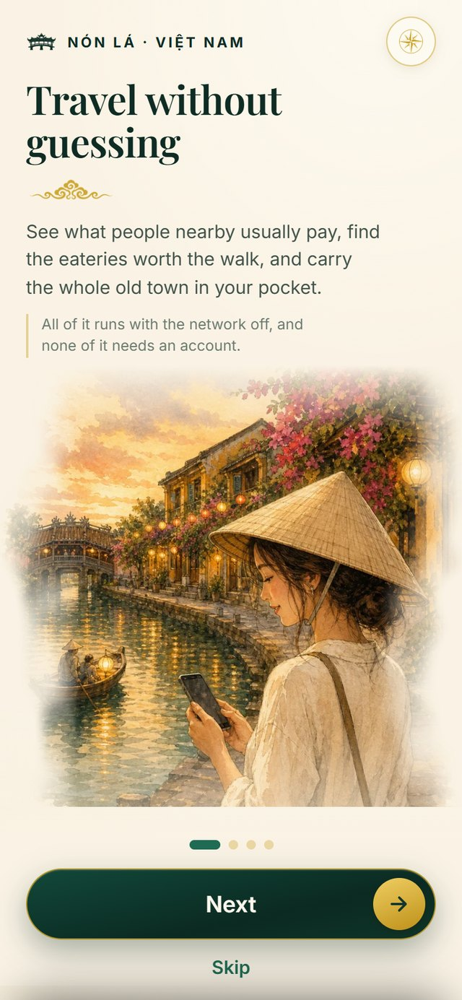
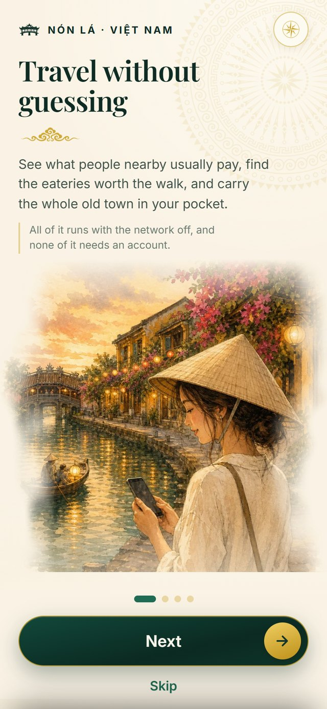
| Next / mũi tên | Sang màn giới thiệu tiếp theo. Bốn chấm dưới ảnh cho biết đang ở màn nào. |
| Skip | Bỏ qua thẳng tới bước tài khoản. |
| Display name | Tên gắn lên mọi thứ bạn viết. Bỏ trống cũng đi tiếp được. |
| Start exploring | Vào app. Từ đây thanh tab dưới đáy mới xuất hiện. |
Năm chỗ, cố định ở đáy màn hình mọi lúc — trừ khi đang mở một màn hình phủ toàn khung (bản đồ, khảo sát, chìa cho người bán), lúc đó thanh nav ẩn đi để nhường chỗ.
| 🗺 Nearby | Bản đồ vùng, cơ sở đang theo dõi, tuyến đi bộ, điểm đi trong ngày. |
| 🍜 Eat | 77 món: món đó là gì, giá phổ biến, cách gọi món. |
| ☀ Nút tròn vàng giữa | Mở màn Quét. Đây là nút to nhất và ở giữa vì đó là việc app sinh ra để làm. |
| 👥 Community | Bài viết kèm ảnh và giá đã trả. |
| 👤 You | Cài đặt, huy hiệu, nhật ký quét, dữ liệu, khảo sát giá. |
Màn hình mặc định. Bốn chế độ, và ba trong bốn chế độ ấy chạy hoàn toàn trên máy.
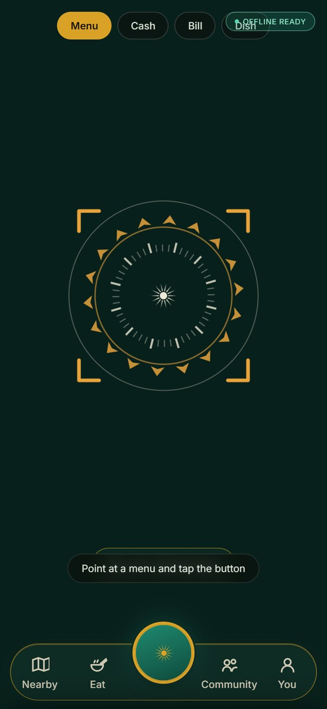
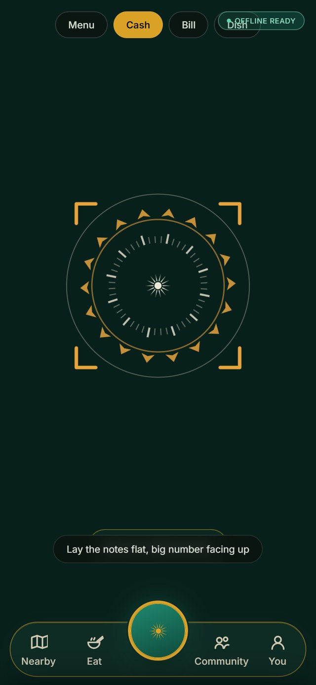
| Menu · offline | Đọc tấm thực đơn: tách từng cặp “tên món ↔ giá”, khớp với 77 món, so với khoảng giá của vùng. |
| Cash · offline | Đọc mệnh giá các tờ polymer đang cầm, cộng tổng, và cảnh báo nếu có dấu hiệu nhầm một bậc số 0. |
| Bill · offline | Đối chiếu tờ hoá đơn với những món đã gọi trong phiên, chỉ ra dòng lạ. |
| Dish · cần mạng | Nhận diện chính món ăn trong đĩa. Là chế độ duy nhất cần kết nối — nhận diện vật thể không có model nào đủ nhỏ để chạy trên máy. |
| Nhãn OFFLINE READY | Service worker đã nạp xong: từ giờ tắt mạng vẫn dùng được. |
| Khung ngắm | Chỉ là chỉ dẫn thị giác — OCR đọc cả khung hình, không chỉ phần trong khung. |
| Nút Say it in Vietnamese | Mở màn chìa cho người bán (mục A6). Đặt ngay ở đây vì đây là chỗ bạn đang đứng khi cần nó: trước quầy, máy đã cầm sẵn trên tay. |
| Nút tròn vàng dưới đáy | Chụp và đọc. |
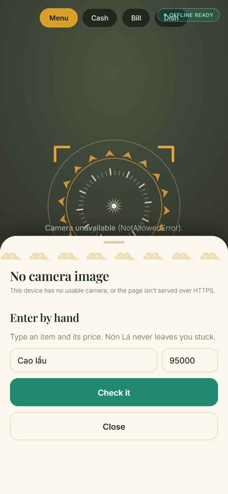
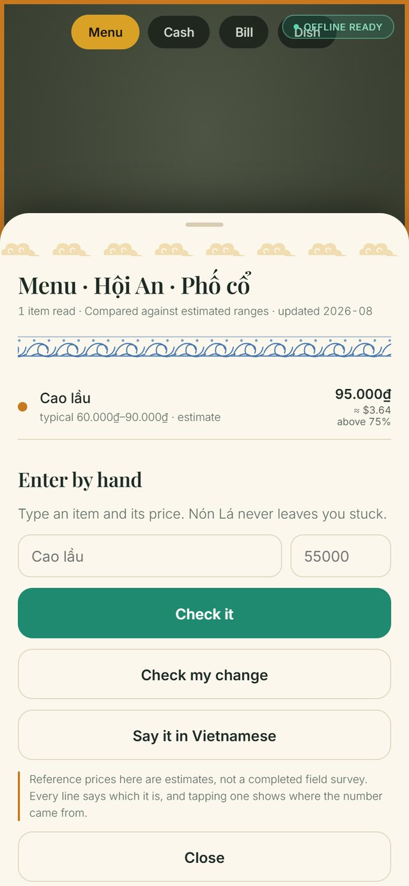
estimate nói rõ con
số tham chiếu ấy chưa qua khảo sát.Thẻ trượt lên từ đáy sau mỗi lần quét. Đây là màn hình quan trọng nhất của cả sản phẩm, nên đáng bóc từng phần.
| Phần | Nói gì |
|---|---|
| Tiêu đề Menu · Hội An · Phố cổ |
Chế độ quét và vùng đang so. So nhầm vùng là ra một phán quyết sai hoàn toàn, nên vùng luôn hiện ngay dòng đầu. |
| Dòng nguồn 1 item read · Compared against estimated ranges · updated 2026-08 |
Đọc được mấy dòng, đang so với loại dữ liệu nào, và bảng giá cập nhật lần cuối khi nào. Nếu quét bằng camera thì có thêm độ tin cậy OCR. |
| Mỗi dòng món | Chấm màu · tên món đã khớp · khoảng giá thường gặp · nhãn nguồn gốc · giá bạn thấy · quy đổi ra đô · nhãn phán quyết. Chạm vào dòng để mở thẻ chi tiết của món. |
| Read the unit, not just the number chỉ hiện khi có bẫy đơn vị |
Dòng nào tính theo trọng lượng (/100g, /lạng), dòng nào ghi thời giá, và phụ thu chưa gộp vào con số. App không đoán trọng lượng con cá trên bàn — nó chỉ ra dòng đó tính theo cân và đưa phép nhân để bạn hỏi rồi tự tính. Một lạng = 100 gam. |
| Not measured here — estimated from nearby zones chỉ hiện khi có món chưa đo |
Món mà vùng này chưa có số đo nào, nhưng suy được từ các vùng khác. Là một khối tách hẳn khỏi các dòng phía trên — một con số suy ra nằm cùng hàng với một con số đo được là đúng thứ app tồn tại để chặn. |
| Enter by hand | Luôn có, kể cả khi quét thành công — dùng để thêm một món OCR đọc sót. |
| Check my change | Sang màn đếm tiền thối, mang theo tổng tiền của lần quét này. |
| Compare with the other menu | Chỉ hiện khi đọc được đủ số dòng: bắt đầu phép so hai tấm thực đơn. |
| Say it in Vietnamese | Chìa màn hình cho người bán đọc. |
| Dải cảnh báo cuối thẻ | Hiện khi có ít nhất một dòng dựa trên dữ liệu ước lượng. |
Khối gập, mặc định đóng. Người đang đứng trước quầy cần câu trả lời, không cần bài giảng — nhưng người đã bị một phán quyết làm cho ngờ vực phải tìm được đường đi tới tận nguồn mà không rời màn hình.
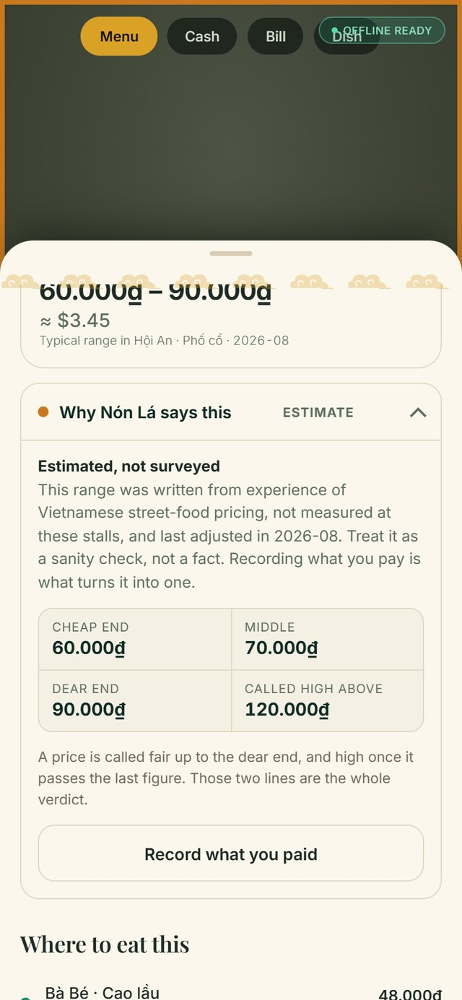
| Cheap end | p25 — một phần tư số chỗ bán rẻ hơn mức này |
| Middle | p50 — trung vị |
| Dear end | p75 — ranh giới của “bình thường” |
| Called high above | p95 — vượt mức này mới bị gọi là cao |
| Record what you paid | Mở thẳng màn khảo sát giá cho đúng món này |
Hai dòng cuối cùng chính là toàn bộ phán quyết: một cái giá được gọi là bình thường cho tới mốc “dear end”, và bị gọi là cao khi vượt qua con số cuối.
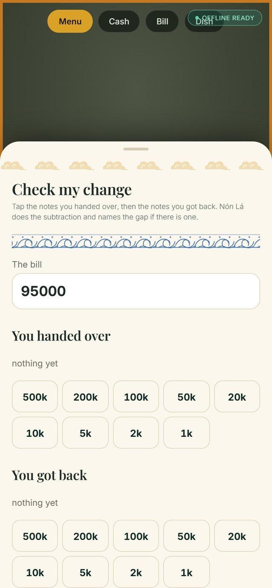
Khi số tiền không khớp, app không dừng ở “thiếu 480.000₫”. Nó nói tiếp rằng con số ấy đúng bằng chênh lệch giữa hai tờ hay bị nhầm — 20.000₫ và 500.000₫ đều xanh lơ, 10.000₫ và 200.000₫ đều nâu đỏ — và mời bạn xem lại tờ đang cầm trong tay.
Mở từ thẻ kết quả hoá đơn khi có từ hai món trở lên.
| Hàng số người | Chọn 2–6 người. Đổi số thì phần chia tính lại ngay. |
| Mỗi món một hàng | Chạm để gán món đó cho từng người; một món chia được cho nhiều người. |
| Dòng tổng | Số tiền từng người phải trả, tính từ đúng những món đã gán. |
Ở phố du lịch, không hiếm quán treo một tấm biển giá tiếng Việt ngoài cửa và đưa một tấm thực đơn tiếng Anh vào bàn, với những con số khác nhau cho cùng một món. Đây là tính năng duy nhất trong app sinh ra dữ kiện mới thay vì tra dữ kiện có sẵn.
Mọi màn hình khác trong app viết cho một người đọc: bạn. Nhưng khoảnh khắc có ma sát thật lại có hai người — và cho tới màn này, chưa có gì trên màn hình dành cho người kia.
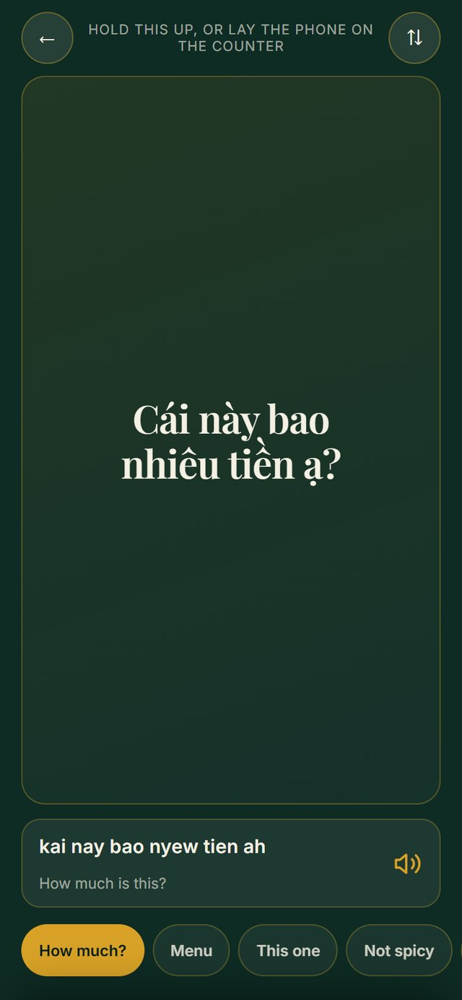
| Khối lớn ở trên | Phần của người bán. Chỉ có một câu tiếng Việt, và số lượng nếu đang gọi món. |
| Khối nhỏ ở dưới | Phần của bạn. Phiên âm để đọc theo, nghĩa bằng thứ tiếng bạn đang chọn, và nút loa phát âm. |
| Hàng chip dưới cùng | Đổi câu: How much? · Menu · This one · Not spicy… |
| Nút ⇅ góc phải | Xoay ngược chữ 180° để chìa qua bàn mà không phải xoay cả máy. |
Bao nhiêu tiền · Cho xem thực đơn có giá · Cho tôi món này · Ít cay thôi · Tôi ăn chay · Tôi bị dị ứng đậu phộng · Mang về · Cho xin hoá đơn · Cho xem lại hoá đơn · Trả tiền mặt · Cảm ơn.
Trả lời câu hỏi trước cả câu hỏi về giá: “món này là món gì, và ăn ở đâu?”
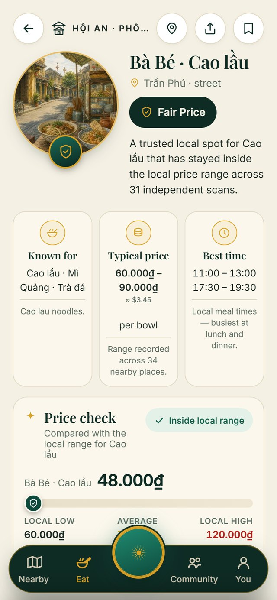
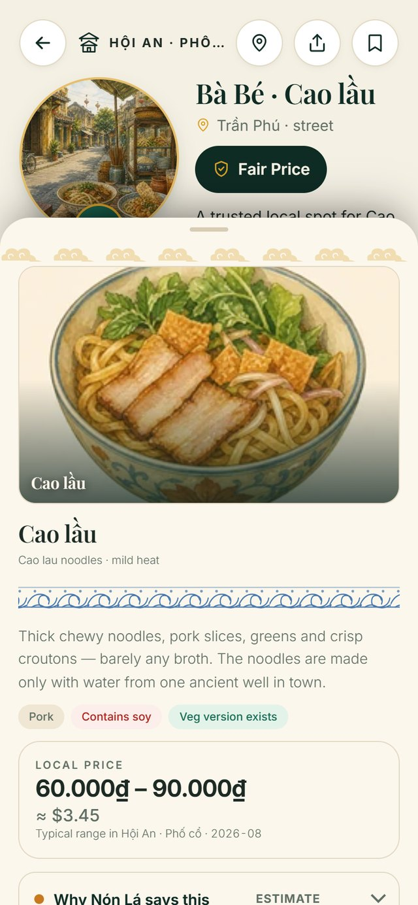
| Hàng nút trên cùng | Quay lại màn Quét · mở Must-Try Food Map · chia sẻ · lưu địa điểm. |
| Cơ sở nổi bật | Ảnh, tên, phố, hạng quán, nhãn Đúng Giá, và một câu nói rõ nó dựa trên bao nhiêu lượt quét độc lập. |
| Ba ô dữ kiện | Known for — món quán làm; Typical price — khoảng giá của vùng; Best time — giờ ăn của người địa phương. |
| Signature dishes | Khay cuộn ngang những món quán đó bán, kèm giá của chính quán. |
| Ô tìm món | Gõ tiếng Việt hoặc tiếng Anh; khớp cả tên gọi khác. |
| More dishes here | Mọi món khác có giá trong vùng này. |
| Món đó là gì | Một đoạn mô tả — nguyên liệu, ăn thế nào, khác gì món trông giống nó. |
| Thành phần cần lưu ý | Đậu phộng, mắm tôm, thịt heo, hải sản — những thứ người ăn kiêng hoặc dị ứng cần biết trước. |
| Khoảng giá thường gặp | Kèm nhãn nguồn gốc, và khối “vì sao nói thế”. |
| Nút phát âm | Đọc tên món bằng giọng tiếng Việt để bạn chỉ vào thực đơn và nói theo. |
| Ăn ở đâu | Những cơ sở trong vùng có bán món này, kèm giá của từng chỗ. |
| Khối liên kết ra ngoài | Bản đồ trỏ thẳng tới điểm; mạng xã hội chỉ mở ô tìm kiếm — app không biết quán nào có tài khoản nào và không đoán. |
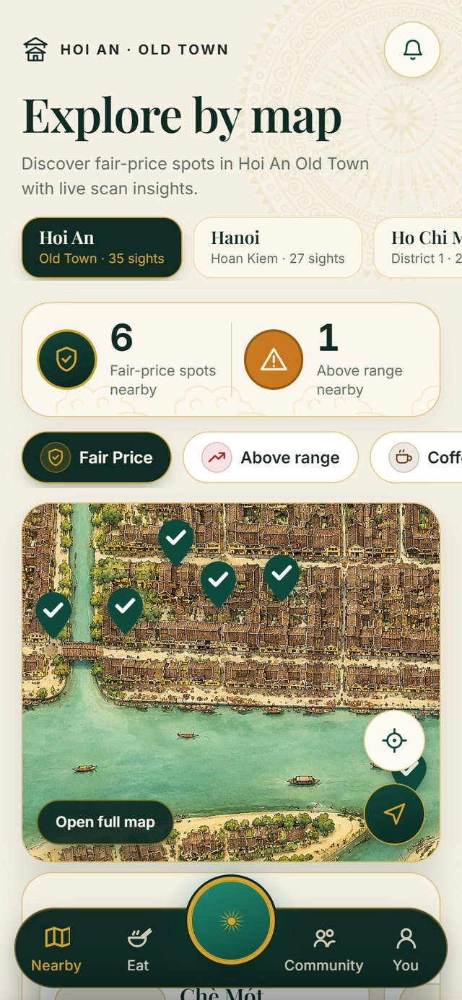
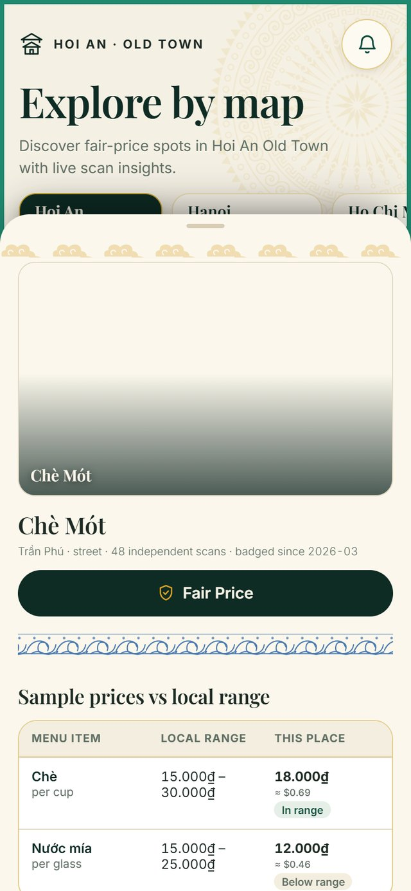
| Hai con số đầu trang | Bao nhiêu cơ sở Đúng Giá, bao nhiêu cơ sở vượt khoảng trong vùng. Đếm thật từ dữ liệu, không ghi cứng. |
| Hàng chip lọc | All · Fair Price · Above range · Must-Try Food · Cultural Sights · Cafés · Hidden Gems. Nút tròn cuối hàng giải thích từng bộ lọc. |
| Khối bản đồ | Chạm vào để mở bản đồ chi tiết. Hai nút nổi: định vị bạn, và mở bản đồ toàn khung. |
| Khay thẻ cuộn ngang | Cơ sở khớp bộ lọc, xếp theo số lượt quét độc lập — càng nhiều lần được xác nhận càng đứng trước. See all mở hết danh sách. |
| Thẻ tuyến đi bộ | Lantern Walk Route — mở màn tuyến. |
| Thẻ cảnh báo | Cơ sở đang vượt khoảng giá, hiện riêng để không lẫn vào khay trên. |
| Dải mốc tham quan | Must-see của vùng, kèm ghi chú và ảnh. |
| Đi trong ngày | Điểm đến ngoài khung bản đồ, kèm khoảng cách đường chim bay tính thật. Vùng nào app đã có dữ liệu thì thẻ có nút chuyển thẳng sang vùng đó. |
| Trạng thái | Đúng Giá / Trên khoảng / Chưa đủ dữ liệu, kèm tháng bắt đầu đạt trạng thái đó. |
| Bảng giá theo món | Giá của chính quán, so với khoảng giá vùng cho từng món. |
| Khoảng cách | Hiện khi bạn đã cho phép định vị. |
| Nhận xét cộng đồng | Ở chế độ sổ tay thì hiện thẳng ghi chép của chính bạn, kèm ngày và số tiền đã trả. |
| Liên kết ra ngoài | Mở bằng app bản đồ của máy · Google Maps · chỉ đường đi bộ · OpenStreetMap · tìm trên mạng xã hội. |
| Write a review | Viết nhận xét kèm ảnh và giá đã trả. |
Chúng dùng chung một phép chiếu và một bộ nét vẽ — dựng ba engine bản đồ là cách chắc chắn để ba màn hình nói ba vị trí khác nhau cho cùng một quán.
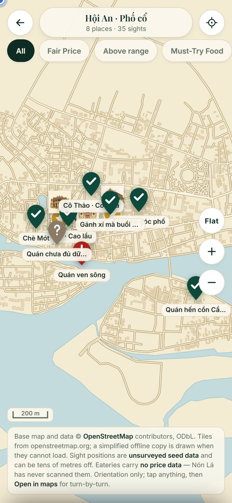
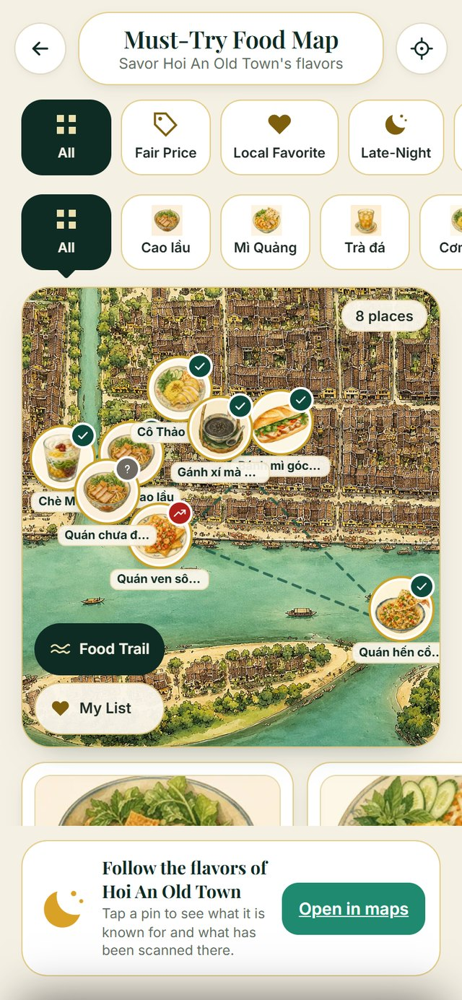
| Kéo · phóng | Một ngón để kéo, hai ngón để phóng, hoặc dùng hai nút +/−. |
| Lọc ba mức tin cậy | Đúng Giá · vượt khoảng · chưa đủ dữ liệu. |
| Định vị | Đưa khung nhìn về chỗ bạn đứng. Vị trí không rời khỏi máy. |
| Chạm ghim | Mở thẻ cơ sở kèm khoảng cách từ chỗ bạn đứng. |
| Mốc phụ | Ẩn khi phóng xa — đổ cả mười mấy mốc ra cùng lúc là cách chắc chắn để không mốc nào nổi bật. |
| Lớp quán OpenStreetMap | Bật khi phóng đủ gần (app nhắc “Zoom in to see eateries”): 2.481 quán quanh sáu vùng. Đây là lớp “quanh đây có gì”, không phải lớp đã quét giá. |
Khác hẳn thẻ cơ sở đang theo dõi: quán ở lớp này chưa được quét giá lần nào, nên thẻ không có nhãn phán quyết, không có khoảng giá của quán, và nói thẳng điều đó ra. Mượn cái nhãn Fair Price cho đẹp là bịa ra một tuyên bố không có lần quét nào chống lưng.
| Probably serves | Món quán nhiều khả năng bán, suy từ chính tên quán — “Phở Thìn”, “Bánh mì Phượng”. Mỗi dòng ghi rõ from the name, và thêm less sure khi mức tin cậy thấp. |
| Con số bên phải mỗi dòng | Dải giá của vùng cho món đó — không phải giá của quán này. App không biết quán này bán bao nhiêu, và không đoán. |
| Chạm một dòng | Mở thẻ chi tiết món, nơi có khoảng giá đầy đủ và khối “vì sao”. |
Mở từ thẻ Lantern Walk Route. Dùng lại đúng khung vẽ của bản đồ chi tiết, chỉ thay phần khung viền.
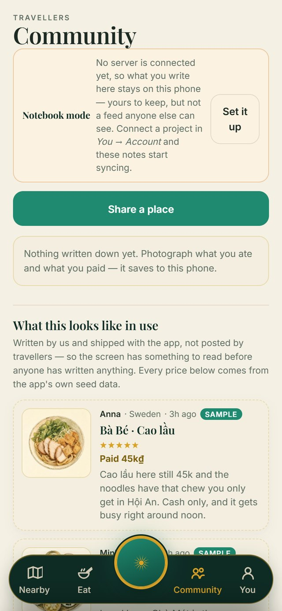
| Feed máy chủ | Sổ tay trên máy | |
|---|---|---|
| Ai đọc được | mọi người | chỉ máy này |
| Nút trên bài | Report | Delete |
| Sao trung bình | từ 3 đánh giá trở lên | không có — hiện thẳng ghi chép |
| Ảnh | Storage của máy chủ | trong máy, trần 60 bài |
Vì sao sổ tay không có ngưỡng “ba đánh giá”: ngưỡng ấy tồn tại để một người tự khen mình không đẩy được con số 5,0 lên trước mặt người lạ. Trong sổ tay riêng không có người lạ nào.
| Nhãn this phone only | Bài đang nằm trong sổ tay riêng, chưa lên máy chủ. |
| Nhãn posted away from the venue | Ảnh hoặc vị trí cho thấy bài viết ở xa quán. App gắn nhãn chứ không chặn. |
| Report | Ba người khác nhau báo cáo thì bài tự ẩn khỏi feed. |
Mọi thứ về bạn và về chiếc máy này: cài đặt, huy hiệu, nhật ký, dữ liệu.
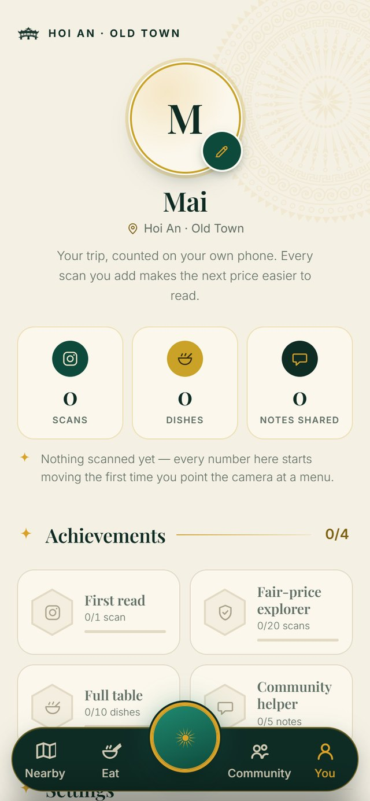
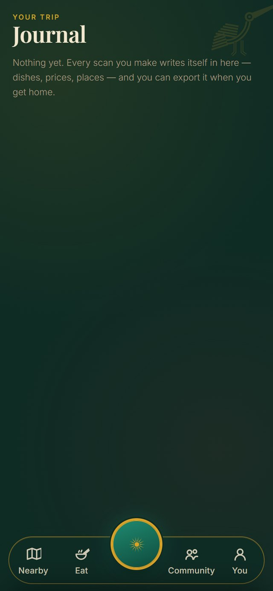
| 🌐 Language | Năm ngôn ngữ, và giá trị hiện ra là tên bản địa — “한국어”, không phải “Korean”. Một danh sách viết toàn tiếng Anh thì đúng nhóm người cần nó nhất lại không nhận ra dòng của mình. Đặt ở ngay đầu mục vì người cần nó nhất là người không đọc được thứ tiếng đang hiện. |
| 🕘 Scan history | Mở nhật ký. Số bên phải là số bản ghi đang có. |
| 📍 Where you are | Đổi vùng trong sáu vùng. Đổi vùng là đổi toàn bộ bảng giá đang dùng để phán quyết. |
| 🎯 Use my location | Tự chọn vùng gần bạn nhất. |
| ⚠ Warn me while I walk | Bật thì khi tới gần một cơ sở đang vượt khoảng giá, app hiện một dải bấm được. Vị trí ở lại trên máy này, không gửi đi đâu. |
| 🛡 Works offline | Hàng chỉ báo trạng thái, không mở gì — nên nó không có mũi tên. Cho biết cache đã sẵn sàng chưa. |
| ▶ Replay the tour | Xem lại bốn màn giới thiệu của lần mở đầu tiên. |
| ✎ Illustrated icons | Khối gập: xưởng icon. Dán khoá API của bạn, bấm Draw all icons để sinh 27 icon minh hoạ. Khoá không được lưu vào máy — tải lại trang là nhập lại; hỏng thì rơi về hình SVG dựng sẵn. |
| 🪙 How verdicts work | Khối gập: giải thích ngắn cách app so giá và ranh giới của ba mức. |
| Account | Đổi tên hiển thị; khi có máy chủ thì thêm đăng nhập bằng mã 6 số qua email. |
| Record what you paid | Mở màn khảo sát giá (mục A12). Đặt trong mục Dữ liệu chứ không phải một tab riêng: đây là việc của người dựng dữ liệu, không phải của khách du lịch. |
| Xuất dữ liệu | Tải nhật ký và bảng giá đã trộn số khảo sát của bạn. |
| Xoá dữ liệu | Xoá cả cụm. Nhật ký và bài viết nằm ở hai kho riêng nên “xoá lịch sử” không bao giờ đụng nhầm vào bài. |
| Make a postcard | Chỉ hiện khi đã có gì để đếm. Vẽ một tấm bưu thiếp tổng kết bằng canvas để gửi về nhà — không có dòng “bạn đã tiết kiệm được X đồng”, vì app không biết bạn sẽ trả bao nhiêu nếu không có nó. |
Màn hình viết cho một người đang đứng trước quầy: một tay cầm điện thoại, mắt liếc bảng giá, người bán đang nhìn. Mười giây một món.
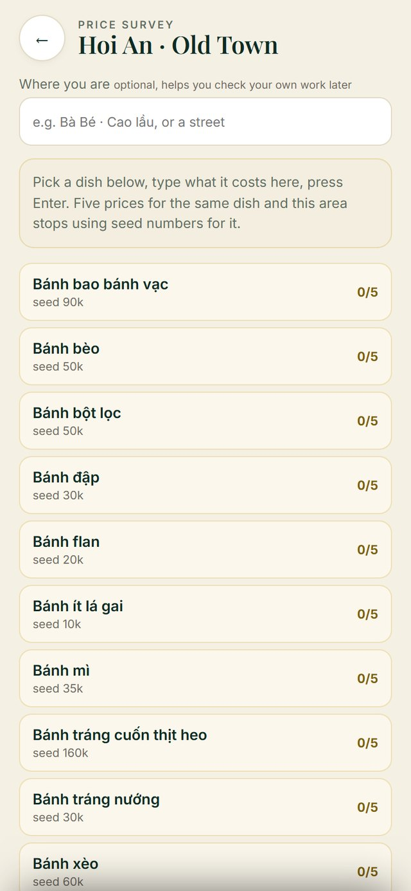
0/5 — đã ghi được mấy mẫu trên năm mẫu cần. Đủ
năm là vùng này ngừng dùng số ước lượng cho món đó, và nhãn nguồn gốc trên mọi
phán quyết đổi từ estimate sang surveyed.
| Chạy offline | Ghi thẳng vào bộ nhớ máy, không đợi mạng. Phố cổ mất sóng là chuyện thường, và mất một buổi khảo sát vì rớt wifi thì không ai đi khảo sát lần thứ hai. |
| Không có nút “Đồng bộ” | Số khảo sát không tự đi đâu cả. Chúng nằm trên máy cho tới khi bạn chủ động xuất ra. |
| Dùng được ngay | Dải đã đủ mẫu được trộn vào bảng giá lúc khởi động — không phải đợi bản phát hành sau. |
| Xuất ra | Nút tải prices.json đã trộn, để đưa số khảo sát vào bản phát hành chính thức. |
Chín trang, dùng chung một khung trên và một chân trang do JavaScript dựng — sửa một chỗ là cả bộ theo.
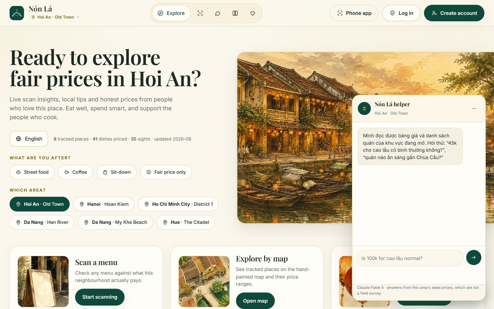
| Khối thương hiệu | Logo và chữ Nón Lá đứng yên; ngay dưới là nút vùng — bấm ra danh sách sáu vùng, mỗi dòng kèm số cơ sở và số điểm tham quan, vì câu hỏi thật của người bấm vào không phải “vùng nào” mà “đổi sang đó thì có gì”. |
| Năm mục nav | Explore · Scan Menu · Community · Journal · Helpers. Trang bản đồ và trang cơ sở không có mục riêng — chúng là con của Explore, nên đứng ở đó mục Explore vẫn sáng. |
| Phone app | Mở bản điện thoại. Có ở mọi trang, vì bản web không quét được bằng camera và không chạy offline. |
| Log in · Create account | Hai trang tài khoản. |
Ở góc phải mọi trang, nạp sau khung trang nên không làm chậm lần vẽ đầu. Nó đọc bảng giá và danh sách quán của vùng đang mở để trả lời, và tự khai ngay dưới ô nhập rằng những con số ấy là dữ liệu hạt giống, chưa phải khảo sát thực địa.
Bốn giá trị của sản phẩm, một nút sang bản điện thoại, và dòng tự khai: giá là dữ liệu hạt giống; tên cơ sở là tên mô tả chứ không phải tên quán có thật; toạ độ, tên phố và điểm tham quan lấy từ OpenStreetMap (ODbL).
index.html| Khối mở đầu | Câu hỏi lớn theo tên vùng, dòng số liệu đếm thật (bao nhiêu cơ sở, bao nhiêu món có giá, bao nhiêu điểm tham quan, cập nhật tháng nào), và bộ chọn ngôn ngữ. |
| What are you after? | Bốn lối vào nhanh: Street food · Coffee · Sit-down · Fair price only — mở thẳng bản đồ với bộ lọc tương ứng. |
| Which area? | Sáu chip vùng. |
| Ba thẻ hành động | Quét thực đơn · Mở bản đồ · Vào cộng đồng. |
| Top tracked spots | Cơ sở nổi bật, kèm câu nói rõ: nhãn trạng thái đến từ lượt quét tích luỹ, không bao giờ gán bằng tay, và mất tự động khi giá trôi ra ngoài khoảng của vùng. |
| From the community | Bài mới nhất. |
| What a dish costs here | Dải món kèm khoảng giá của vùng. |
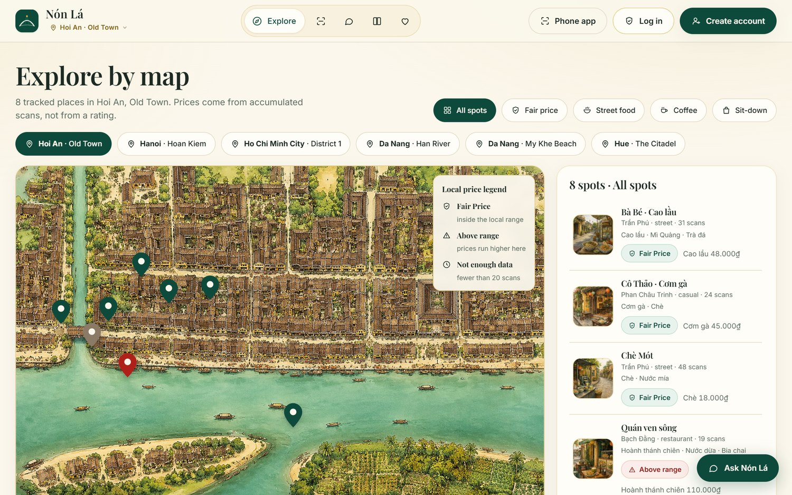
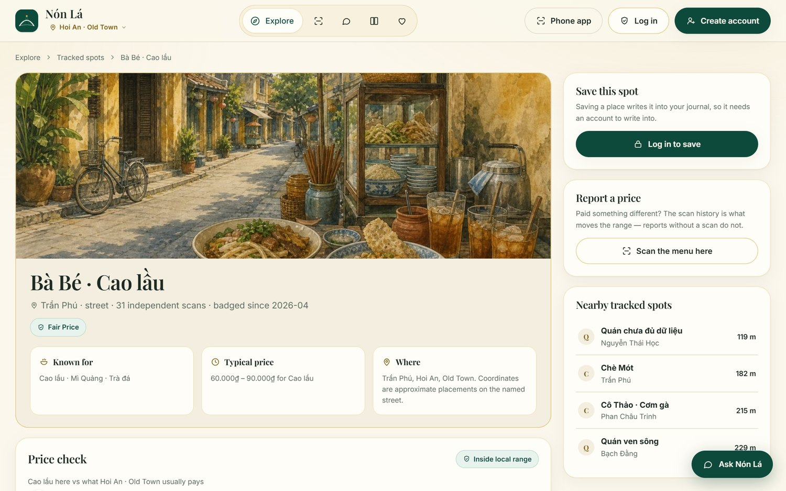
Explore by mapmap.html | Bản đồ vùng và khối Tracked spots. Nhận tham số lọc từ trang chủ (?f=street, ?f=cafe, ?f=sit, ?f=fair). |
Placeplace.html?id=… | Price check — giá của quán so với khoảng giá vùng; Signature dishes; Sights within 400 m; Save this spot; Report a price; Nearby tracked spots. |
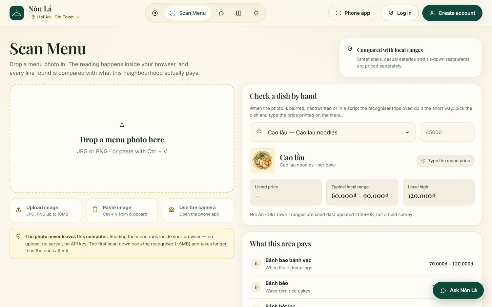
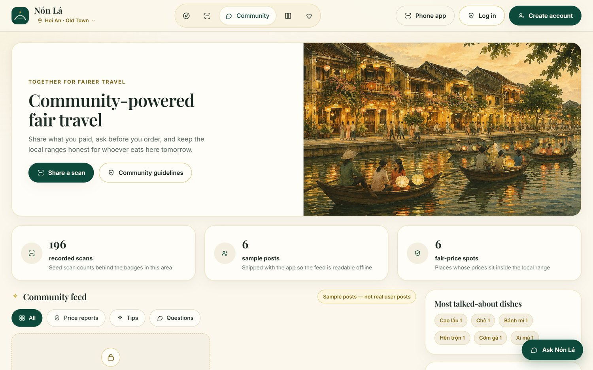
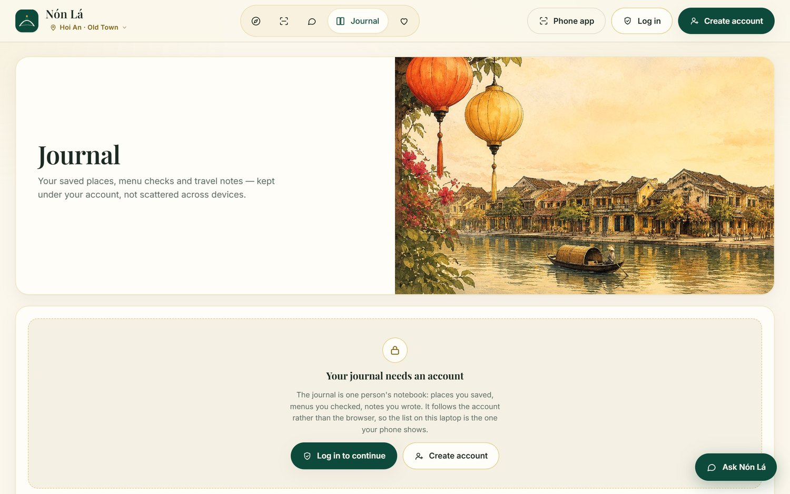
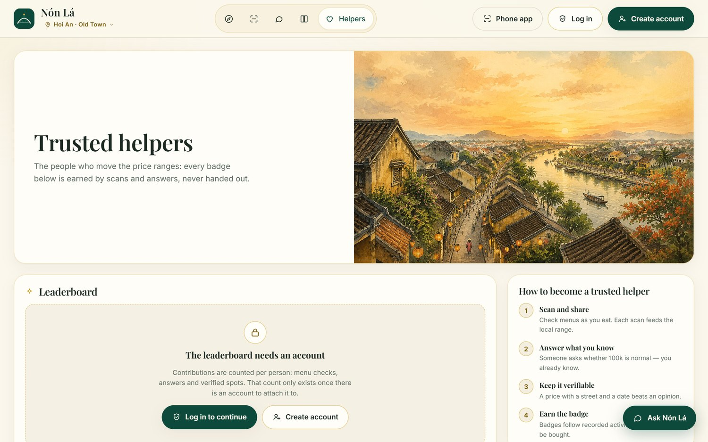
| Log in · Sign up | Hai trang tài khoản. Trang đăng ký có riêng một khối What works without an account — nói thẳng rằng gần như mọi thứ vẫn chạy khi không đăng ký. |
| Hiện tượng | Nguyên nhân và cách xử lý |
|---|---|
| Camera không lên | Camera cần HTTPS. Bản deploy có sẵn; chạy tại máy thì dùng 127.0.0.1, không dùng địa chỉ IP nội bộ. Nếu đang chờ cấp quyền, app sẽ tự nhắc sau 4 giây và luôn mở lối gõ tay. |
| OCR đọc sai tên món | Khớp mờ chịu được sai chính tả khá nặng, nhưng không phải mọi ca. Gõ tay đúng dòng đó ở khối Enter by hand — nhanh hơn chụp lại. |
| Một dòng ra dấu gạch | Vùng đang chọn chưa có dòng giá cho món đó. Đây là chủ ý: app không đoán bừa. Kiểm lại vùng ở You → Where you are. |
| Chụp tiền bị đọc sai | Nhận diện mệnh giá dựa vào con số in trên tờ tiền. Trải phẳng tờ tiền, để số hướng lên, tránh bóng loá. Tờ bị gấp thì gõ tay. |
| Bấm Post mà bài không lên máy chủ | Bản đang chạy chưa nối máy chủ. Bài vẫn được lưu trên máy này và hiện trong feed với nhãn this phone only. |
| Bản đồ trống | Vùng chưa nạp xong. Đợi vài giây rồi mở lại; nếu vẫn trống thì tải lại trang một lần để service worker nạp lại dữ liệu vùng. |
| Icon minh hoạ không sinh được | Thiếu khoá API, gọi hỏng, hoặc môi trường chặn request ra ngoài. App nói thẳng ra giao diện và dùng hình SVG dựng sẵn — mọi thứ khác vẫn chạy. |
| Đổi ngôn ngữ mà tên món không đổi | Đúng như thiết kế. Tên món giữ nguyên tiếng Việt ở mọi ngôn ngữ, vì đó là thứ bạn phải chỉ vào thực đơn và đọc lên cho người bán nghe. |
Lần mở đầu tiên nạp toàn bộ dữ liệu sáu vùng và bộ đọc chữ vào máy. Sau đó tắt hẳn mạng vẫn dùng đủ.
Trong You. App tự chọn vùng gần nhất, nên bảng giá dùng để phán quyết là bảng đúng chỗ bạn đang đứng.
Một lần chụp đọc được nhiều dòng, và mức nặng nhất được vẽ thành viền quanh màn hình.
Bốn con số ở đó cho biết phán quyết dựa trên cái gì — và nhãn nguồn gốc cho biết nó đáng tin tới đâu.
Màn xoay ngược chỉ chứa điều bạn muốn nói. Khoảng giá tham chiếu không bao giờ đi lên phần người bán đọc.
Nhất là khi vừa đưa một tờ xanh lơ. 20.000₫ và 500.000₫ trông giống nhau dưới ánh đèn quán hơn bạn nghĩ.
You → Record what you paid. Năm mẫu cho một món là vùng đó ngừng dùng số ước lượng cho món ấy — với mọi người dùng máy đó.
Mọi con số trên tấm ảnh đều lấy từ lịch sử quét thật của bạn.
Ảnh trong tài liệu này chụp tự động từ bản đang chạy ngày 04/09/2026,
ở khổ máy 390×844 cho bản điện thoại và 1440×900 cho bản máy tính. Vùng mặc định là
Hội An · Phố cổ. Chụp lại bất cứ lúc nào bằng tools/shots.mjs.